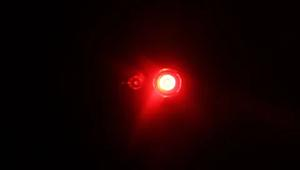

Midnight arrived, and the city was quiet. The crew moved like shadows through the streets, reaching the museum's back entrance. Lisa quickly hacked into the security system, shutting down the cameras and bypassing the alarms. The red blinking lights of the security system turned green—everything was going according to plan.
Jack, with his powerful build, swiftly and silently took down the guards at the entrance. He gave a nod to Marcus, signaling that the coast was clear. Carla, dressed as a security officer, strolled confidently into the museum, blending in with the night staff. She kept watch as Marcus and Jack entered the main hall where the diamond was displayed.
The Night's Eye glimmered under a glass case, protected by a state-of-the-art laser grid. Marcus carefully began disabling the grid, his hands steady as he worked on the final step of their plan. |
 |